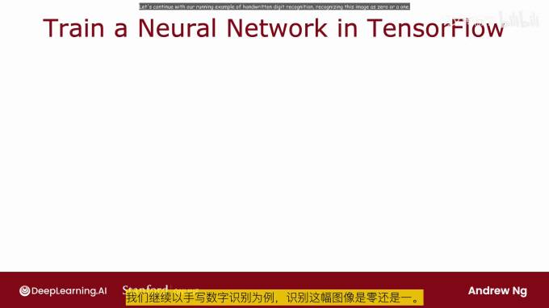
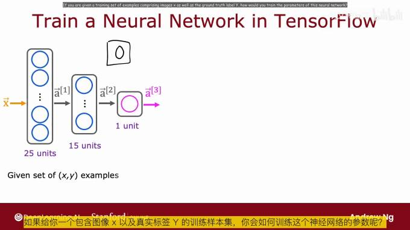

欢迎回到这门高级学习算法课程的第二周。上周，你学习了如何在神经网络中进行推理。00:03
本周，我们将讲解神经网络的训练。00:12
我觉得能够用你自己的数据来训练你自己的神经网络，真的很有趣。00:16
本周，我们将看看你能如何做到这一点。00:23
我们继续以手写数字识别为例，识别这幅图像是零还是一。00:29

这里我们使用你上周看到的神经网络架构，其中你有一个输入 x，也就是图像，然后是第一隐藏层，有二十五个单元，第二隐藏层有十五个单元，然后是一个输出单元。00:38

如果给你一个包含图像以及真实标签 y 的训练样本集，你会如何训练这个神经网络的参数呢？00:56

我先给你看看在 TensorFlow 中用来训练这个网络的代码。01:07
然后在这之后的几个视频里，我们会深入探讨细节，解释这些代码实际在做什么。01:13
所以这是你会写下的代码。01:20
这第一部分你可能从上周就很熟悉了，你在要求 TensorFlow 将这神经网络的三个层按顺序串联起来。01:23
第一隐藏层有二十五个单元，并使用 sigmoid 激活函数，然后是第二隐藏层，最后是输出层。01:33
所以，相对于你上周看到的内容，这里没有什么新的东西。01:44
第二步是，你必须要求 TensorFlow 编译模型。01:48
而要求 TensorFlow 编译模型的关键一步，是指定你想要使用的损失函数是什么。01:53
在这个例子中，我们将使用一个叫做二元交叉熵损失函数的东西。02:00
我们会在下一个视频中详细说明这到底是什么。02:07
然后，在指定了损失函数之后，第三步是调用 fit 函数，它告诉 TensorFlow，使用你在第二步中指定的损失或代价函数，将你在第一步中指定的模型拟合到数据集 x 丫上。02:11

回想一下在第一门课中，当我们讨论梯度下降时，我们必须决定运行梯度下降多少步，或者说运行多长时间。02:29

所以 epoch 是一个技术术语，表示你可能希望运行像梯度下降这样的学习算法多少步。02:39

第一步是指定模型，它告诉 TensorFlow 如何进行推理计算。02:48
第二步是使用特定的损失函数来编译模型。02:55
所以这就是你在 TensorFlow 中训练神经网络的方式。03:03
像往常一样，我希望你不仅能调用这几行代码来训练模型，而且还能理解这几行代码背后实际发生了什么。03:08
这样你就不会在只是调用它，却不理解其原理。03:18
我认为这很重要，因为当你运行一个学习算法时，如果它一开始不工作，拥有一个关于背后实际运作原理的思维框架，将有助于你在事情不如预期时进行调试。03:23
那么，带着这个想法，让我们进入下一个视频，我们将更深入地探讨这些 TensorFlow 实现步骤的真正含义。03:39